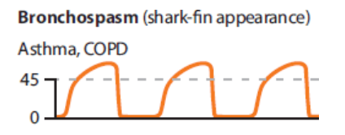

| History | Signs and Symptoms | Differential |
|---|---|---|
|
• Asthma, COPD, Chronic Bronchitis, Emphysema history • Onset of symptoms • Concurrent symptoms (fever, cough, rhinorrhea, tongue/lip swelling, rash, labored breathing, FBAO) • Usual triggers of symptoms (cigarette smoke, change in weather, URI) • Home treatment (oxygen, nebulizers) • Sick contacts • Previously intubated |
• Shortness of breath (inability to speak full sentences) • Wheezing, rhonchi • Fever, cough, congestion • Respiratory distress (hypoxia, retractions, nasal flaring, pursed lip breathing, tripoding, cyanosis, tachypnea, etc) |
• Asthma • Anaphylaxis • Aspiration • COPD • Pleural effusion • Pneumonia • Pulmonary embolus • Pneumothorax • Cardiac (MI or CHF) • Pericardial tamponade • Hyperventilation • Inhaled toxin |
1.
UNIVERSAL PATIENT CARE.
2.ALBUTEROL
(5 mg) or
Pre-mix IPRATROPIUM BROMIDE/ALBUTEROL
(0.5 mg/3 mg) via nebulizer. May repeat x2 if needed
for continued symptomatic relief.
3. Relay information to incoming ambulance or call for intercept per
INTERCEPT CRITERIA.
1. Continue EMR TREATMENT.
2. Consider
CPAP
application
3. If in severe distress with impending respiratory failure,
consider
EPINEPHRINE (1:1,000)
at (0.3-0.5) mg IM.
1. Continue EMR / EMT TREATMENT.
2. Establish IV access.
3. In patients with persistent respiratory distress despite the above
treatment, consider
MAGNESIUM SULFATE
2 grams IV in 50 mL NS or premix bag, infused over 10
minutes
4.
METHYLPREDNISOLONE
125 mg IV/IM/IO or
DEXAMETHASONE
10 mg IV/IO/PO.
5. Consider
CPAP
application.
6. Assist ventilations with in-line nebulizer kit and BVM if
necessary.
7. Reassess need for
Orotracheal Intubation
if respiratory symptoms worsen or do not improve with treatment.
8. If in severe distress with impending respiratory failure,
consider
EPINEPHRINE (1:1,000)
at 0.3-0.5 mg IM.
9. Continue to monitor need for
Orotracheal Intubation
if respiratory symptoms worsen or do not improve with treatment. See
AIRWAY MANAGEMENT
Protocol.
PEARLS
• Pulse oximetry and end-tidal CO2 (EtCO2) should be routinely used as
an adjunct to other forms of respiratory monitoring.

• Beware of patients with a “silent chest” (absent breath sounds) as
this may indicate severe bronchospasm and impending respiratory
failure.
• Remember that not all wheezing is caused by asthma and that not all
asthmatics wheeze.
- Patients with congestive heart failure may present with lung
sounds that mimic asthma (“cardiac wheeze”)
• Consider cardiac etiology for shortness of breath and/or chest pain
and refer to
CHEST PAIN
protocol.
• In the asthmatic patient, pharmacologic intervention should take
priority over
CPAP
and be given in line with
CPAP.
•
CPAP
should not be initiated on patients with a systolic BP < 90mmHg.
CPAP
increases intrathoracic pres-sure and can decrease venous return to
the heart (compromising the patient’s perfusion). Contact Medical
Control and use
CPAP
cautiously if the systolic BP is between 90-100 mmHg for the same
reason.
• Giving positive pressure in the setting of bronchoconstriction,
either via a Blind Insertion Airway Device
(BIAD)
or intubation, increases the risk of air trapping which can lead to
pneumothorax and cardiovascular collapse. These interventions should
be reserved for situations of respiratory failure.
| KEY DOCUMENTATION ELEMENTS | PERTINENT ASSESSMENT FINDINGS |
|---|---|
|
• Reparatory rate • Oxygen saturation and EtCO2 • Use of accessory muscles • Breath sounds • Air entry • Mental status • Color • Response to interventions |
• In the setting of severe bronchoconstriction, wheezing might not be heard. Patients with known asthma who complain of chest pain or shortness of breath should be empirically treated, even if wheezing is absent. |
| QUALITY METRICS |
|
• CPAP utilization • Utilization of continuous pulse oximetry and EtCO2 |